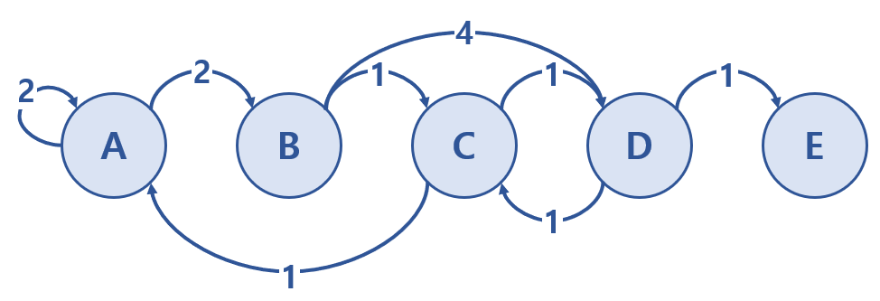

Assignment · Value Iteration: Cost-to-Go & Cost-to-Come
Backward and forward value iteration on a weighted city graph, with fixed and unbounded plan length
Value iteration assignment: fixed-length and unfixed-length backward/forward value iteration over a 5-city graph.
Project at a glance
Problem: Find optimal costs on a directed five-city graph under fixed and unbounded planning horizons.
Contribution / scope: Implement backward cost-to-go and forward cost-to-come recursions and compare computed tables with course references.
Recorded evidence: Recorded matrices show how costs propagate across the graph under the specified boundary conditions.
Limitations: This is a small instructional graph; the results do not measure scalability or performance on general planning tasks.
NoteAbout this edition
English text and comments were edited for publication. Outputs are archived notebook results, not newly executed results. Exercise prompts and reference illustrations are course material; implementations and handwritten work are presented as coursework. Source and reproducibility notes.
TipSummary
Five cities (A–E) are connected by directed roads with travel costs, encoded as a transition-cost matrix with \(\infty\) for missing edges. Fixed-length planning: backward value iteration fills a table \(G_k(x)\) with the optimal cost-to-go of reaching D in exactly five steps from every city, and forward value iteration fills \(C_k(x)\) with the optimal cost-to-come from A. Unfixed-length planning: the same recursions are iterated on a single value vector until it stops changing, giving shortest-path costs regardless of the number of moves (a self-loop of cost 0 at the goal / start city makes the fixed-point well defined). The reference tables from the lecture slides are shown as images next to each computed matrix.
Fixed-Length Cost-to-Go and Cost-to-Come
Consider the cities represented by the graph below.
Each node is a city; there are 5 cities (A, B, C, D, E).
Each edge carries the cost of travelling between two cities.

Coursework figure 1: Fixed-Length Cost-to-Go and Cost-to-Come
Fixed-Length Cost-to-Go and Cost-to-Come
1. Backward value iteration
City D is the destination.
Starting from A, B, C, D or E, the destination (D) must be reached after five moves.
Choosing the initial position counts as one move.
import numpy as np# Row : origin# Col : destination################## Fill Your Code! ##################cost4transition = np.array([[2.,2., np.inf, np.inf, np.inf],[np.inf, np.inf, 1., 4., np.inf], [1, np.inf, np.inf, 1., np.inf], [np.inf,np.inf,1.,np.inf,1.], [np.inf,np.inf,np.inf,np.inf,np.inf]])#####################################################cost4transition